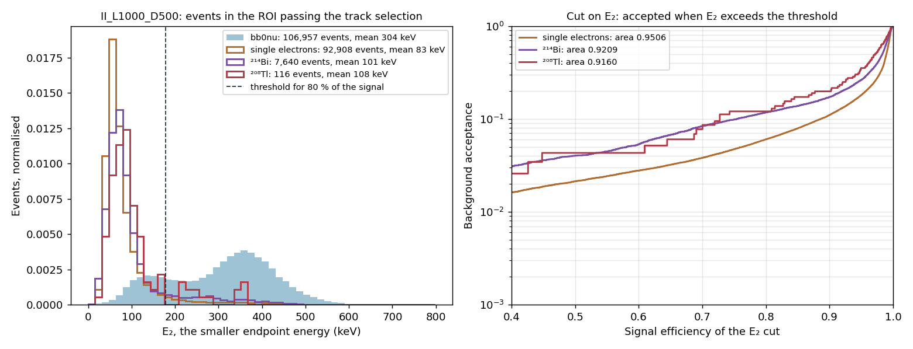

Selection
Events after each step; in brackets, the fraction of the first row. ROI: 2452.03 to 2463.63 keV.
| Step | bb0nu | single electrons | ²¹⁴Bi | ²⁰⁸Tl |
|---|---|---|---|---|
| Generated in Geant4 | 300,000 (100 %) | 300,000 (100 %) | 40,000,000 (100 %) | 40,000,000 (100 %) |
| In the input files | 254,088 (84.7 %) | 234,161 (78.1 %) | 1,271,276 (3.18 %) | 434,083 (1.09 %) |
| Accepted by the fast trigger | 202,056 (67.4 %) | 177,651 (59.2 %) | 162,982 (0.407 %) | 143,302 (0.358 %) |
| Event energy in the ROI | 152,576 (50.9 %) | 134,243 (44.7 %) | 31,641 (0.0791 %) | 715 (0.00179 %) |
| Track selection | 106,957 (35.7 %) | 92,908 (31 %) | 7,640 (0.0191 %) | 116 (0.00029 %) |
Cut on the endpoint energy
E₁ ≥ E₂ are the energies in spheres of 7 mm around the two ends of the main track. An event is accepted when E₂ exceeds the threshold. Efficiencies and acceptances are fractions of the events in the ROI that pass the track selection; errors are binomial.
| Signal efficiency of the cut | Threshold on E₂ (keV) | single electrons accepted | ²¹⁴Bi accepted | ²⁰⁸Tl accepted |
|---|---|---|---|---|
| 90.0 % | 128 | 11.04 ± 0.10 % (10254 of 92,908) | 17.23 ± 0.43 % (1316 of 7,640) | 19.83 ± 3.70 % (23 of 116) |
| 80.0 % | 178 | 6.04 ± 0.08 % (5608 of 92,908) | 11.78 ± 0.37 % (900 of 7,640) | 12.07 ± 3.02 % (14 of 116) |
| 70.0 % | 235 | 3.81 ± 0.06 % (3542 of 92,908) | 8.38 ± 0.32 % (640 of 7,640) | 7.76 ± 2.48 % (9 of 116) |
| 60.0 % | 288 | 2.78 ± 0.05 % (2583 of 92,908) | 5.34 ± 0.26 % (408 of 7,640) | 4.31 ± 1.89 % (5 of 116) |

Runs: II_L1000_D500_bb0nu · II_L1000_D500_single_electrons · II_L1000_D500_bi214 · II_L1000_D500_tl208. Numerical results: comparison.h5.